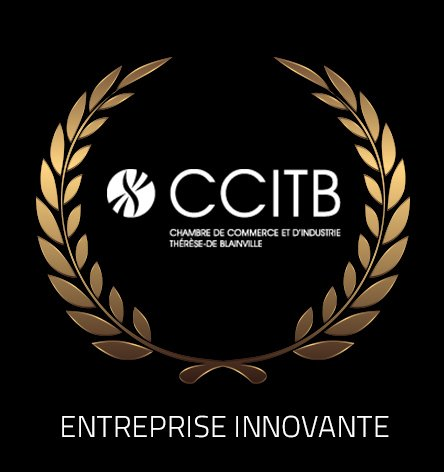

ScanMeg atteint rapidement un succès international en raison de la qualité et de l'efficacité des systèmes développés par ses experts. Excellant dans le domaine de la mesure et de la détection des objets, l'entreprise parvient à optimiser les processus de production de tous les domaines.
ScanMeg s'investit dans la recherche et le développement de produits facilitant la production industrielle de plusieurs secteurs d'activité. Par notre main-d'œuvre qualifiée, nous demeurons un partenaire pour nos clients qui sont constamment en quête de performance. En déployant les efforts nécessaires, nous surpassons les façons de faire pour concevoir les meilleures solutions de mesure et de détection sur le marché.
Aussi diversifiée soit-elle, notre clientèle détient des défis de production particuliers à leur domaine et à leur usine. Notre équipe compétente est à l'écoute de chaque besoin de production pour s'assurer de l'adéquation entre le senseur, l'application et la technologie en place. De plus, nous nous assurons de l'intégration des équipements aux chaînes de production pour ainsi augmenter leur rendement et leur facilité d'utilisation.

ScanMeg remporte le prix de l'Entreprise Innovante décerné par la Chambre de Commerce et d'Industrie Thérèse-de-Blainville, en reconnaissance de la qualité de ses produits, de son expansion internationale et de son service d'exception.
Ayant travaillé dans le domaine et cerné l'enjeu des outils de contrôle et de mesure, nous avons fondé ScanMeg. Rapidement, les couleurs de l'entreprise se sont répandues à l'international connaissant ainsi un succès fidèle à la qualité des systèmes développés.
Cette année marque la fondation de ScanMeg et l'apparition des premiers systèmes de mesures ScanMeg dans l'industrie forestière.
Par sa réputation impeccable, ScanMeg atteint une reconnaissance internationale et acquiert des nouveaux clients internationaux dont aux États-Unis.
La demande croissante mène rapidement à l'agrandissement de l'équipe ScanMeg et à une production supérieure.
ScanMeg quadruple ses locaux et les adapte pour optimiser la production. Cette année marque également l'apparition de plusieurs nouveaux produits.
ScanMeg remporte le prix de l'Entreprise innovante de la CCITB en raison de la qualité des produits, de son expansion et de son service d'exception.
Une fois de plus les locaux sont agrandis de 50%, pour répondre à la demande croissante du marché mondial.
Acquisition par Marie-France Gagnon et Mathieu Dubord. Nouvelle ère de croissance stratégique. Aujourd'hui, les produits ScanMeg sont présents dans plus de 40 pays et plus de 5 000 usines de tous types d'industries.
Distribués mondialement
Découvrez les raisons de notre succès et notre réputation impeccable, en consultant nos experts.
Contactez-nous →